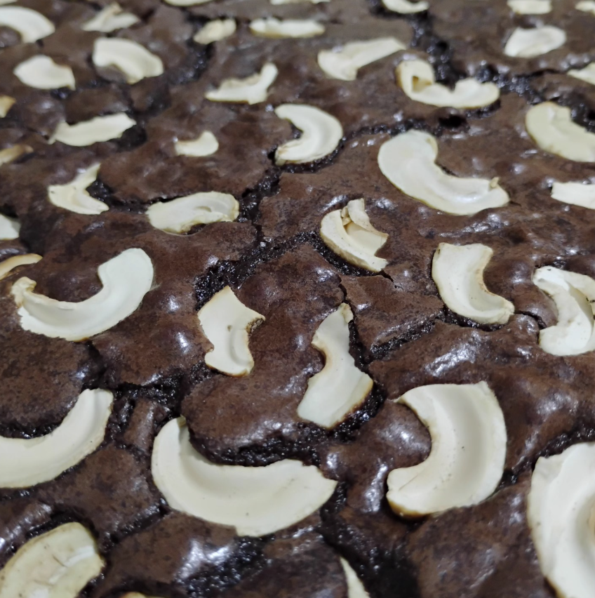
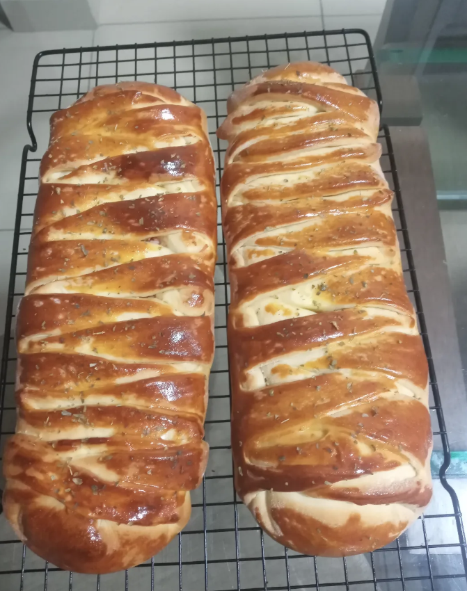

Brownies
Brownie de castanha
Chocolate intenso, casquinha delicada e textura de castanhas.
Brownies, cookies, bolos e salgados artesanais preparados em Fortaleza. A vitrine muda, a vontade aumenta — e o pedido continua simples.
O movimento fica concentrado na primeira metade da experiência. Daqui para baixo, leitura, comparação e conversão ficam estáveis.

Chocolate intenso, casquinha delicada e textura de castanhas.
Cremoso, marcante e feito para quem gosta de exagero na medida certa.

Massa dourada, recheio cremoso e cara de lanche em família.